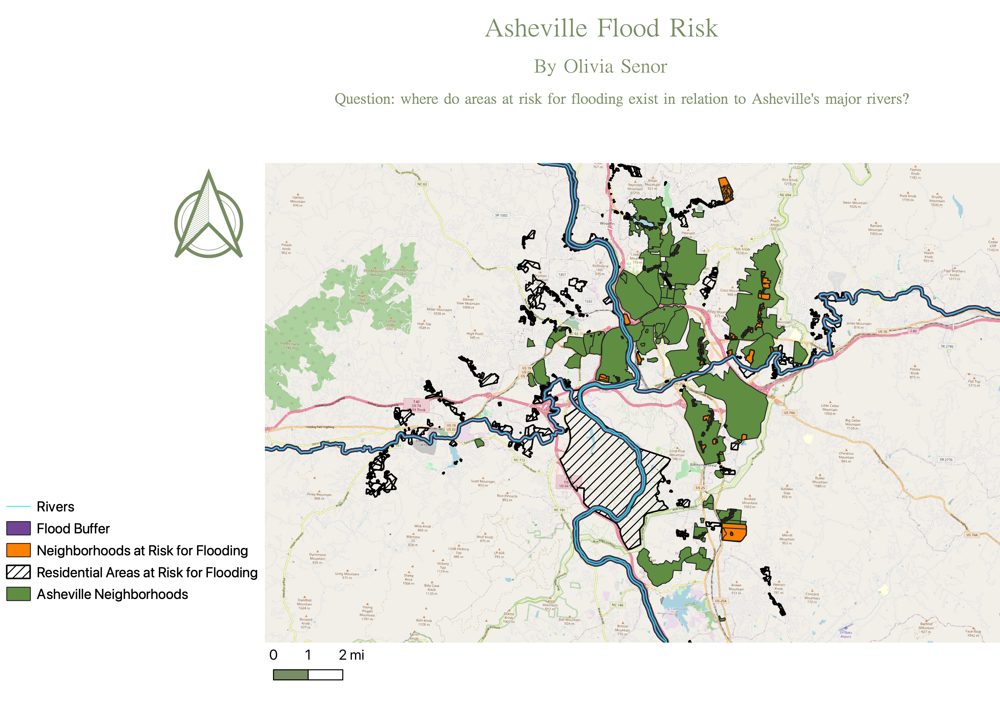

Homework 10: Geoprocessing Analysis
Olivia Senor
This is my map of Asheville, NC! The question I sought to ask was "where do areas at risk for flooding exist in relation to Asheville's major rivers?" In Asheville, the rainy months can bring heavy flooding, especially around the French Broad, so I was curious to see how this impacts residents.
The geoprocessing methods I utilized were the clip, intersect, and buffer functions. I first used the clip function to ensure that the "Rivers" shapefile was contained within the Buncombe county area (I did this by using a North Carolina county map in the background, which I later removed). The next tool I used was the intersect function, with which I was able to create a new layer called "Neighborhoods at Risk for Flooding" by intersecting the "Residential Areas at Risk for Flooding" layer the "Asheville Neighborhoods" layer. This shows more clearly the specific neighborhoods within Asheville's flood zones. Finally, I created a buffer of 250 feet for the "Rivers" layer, just to show visually how far the rivers might flood.
Some potential shortcomings of my map begin with the buffer layer. This buffer layer was arbitrarily chosen-- Asheville's rivers have an average flood height of 18 feet, but I was unsure as to what that might look like on a horizontal plane. 250 feet was the lowest value that was easily visible, so I chose it as my buffer thickness. This could potentially be misleading. Another issue is the massive section in the lower middle portion of my map, which falls under the "Residential Areas at Risk for Flooding" layer but not the "Asheville Neighborhoods" layer. My guess is that the creator of this dataset perhaps had different criteria for residential areas that were not limited to neighborhoods. This, too, though, is a bit of an anomaly.

Data used for this project
Website
Asheville Neighborhoods geoJSON
Residential Areas at Risk geoJSON
Asheville Neighborhoods and Residential Areas at Risk Intersect (Neighborhoods at Risk) geoJSON
Rivers geoJSON
Rivers Clipped geoJSON
Rivers Buffer geoJSON